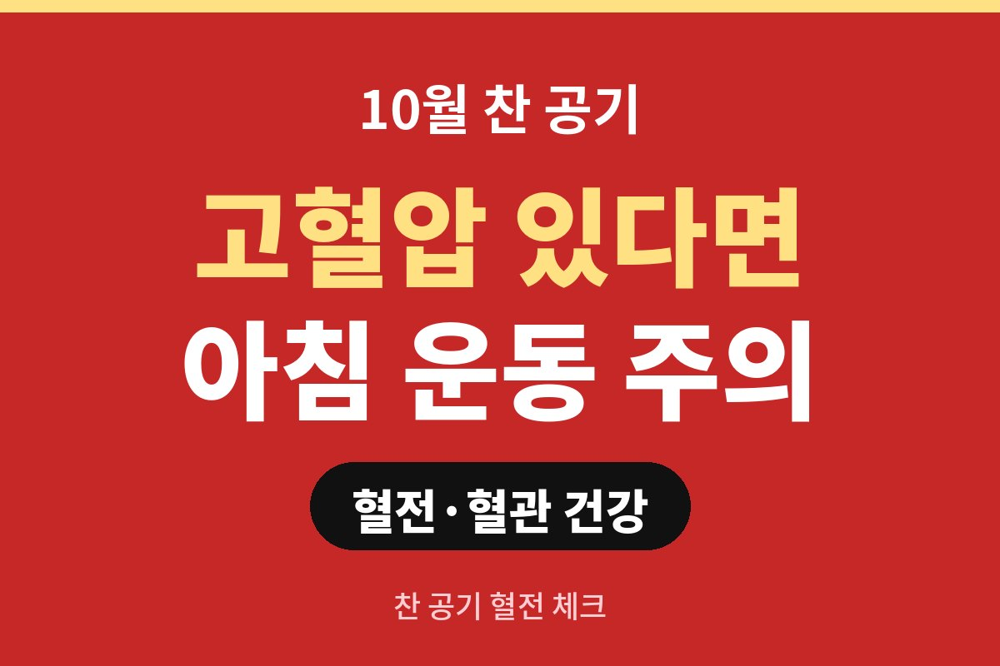
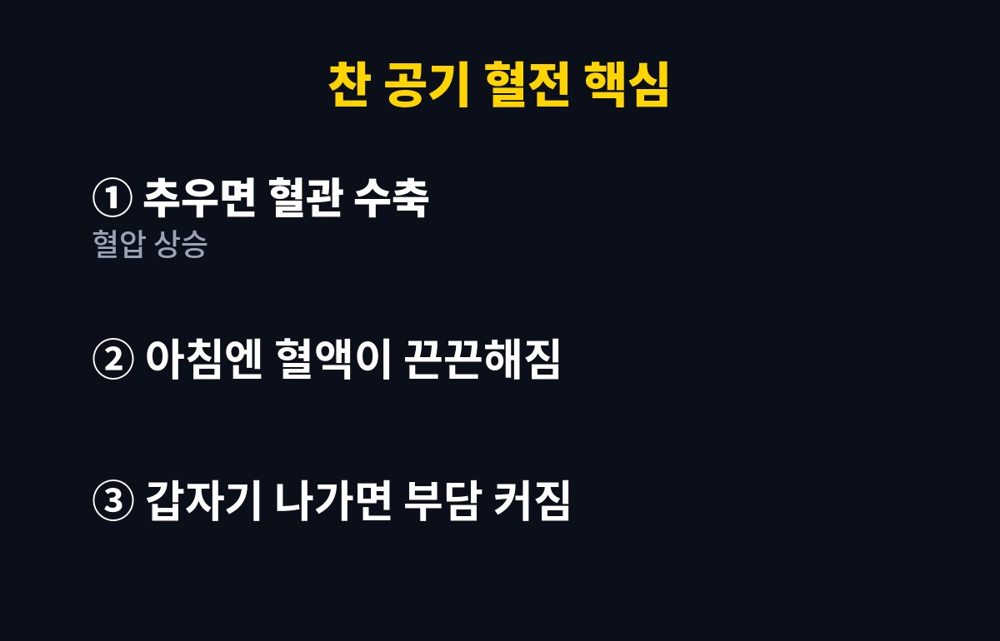
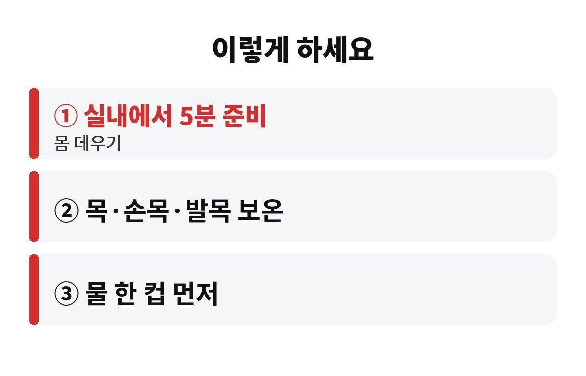

찬 공기 혈전 위험은 날이 추워지는 10월부터 눈에 띄게 커지고, 특히 고혈압이 있다면 아침 운동이 오히려 혈관에 부담을 줄 수 있습니다. 고혈압이나 심장 질환이 있는 분, 혹은 부모님이 그런 분이라면 왜 하필 아침이 문제인지 궁금하시죠?
요즘 아침저녁으로 기온이 확 떨어지면서 "나이 들면 겨울에 조심해야 한다"는 말이 실감 나는 계절이 됐어요. 오늘은 찬 공기 혈전이 왜 생기기 쉬운지, 그리고 오늘 아침부터 바로 바꿀 수 있는 습관이 뭔지 쉽게 풀어볼게요.
사람 몸은 추위를 느끼면 체온을 지키려고 피부 가까이 있는 혈관을 좁게 수축시킵니다. 혈관이 좁아지니 같은 양의 피가 지나가려면 압력이 올라가겠죠. 호스 끝을 손으로 꽉 쥐면 물이 세게 나오는 것과 같은 원리예요. 그래서 기온이 내려가면 혈압이 평소보다 올라가기 쉽습니다.
여기에 하나가 더 있어요. 날씨가 쌀쌀하면 목마름을 덜 느껴서 물을 적게 마시게 되거든요. 수분이 부족하면 혈액이 상대적으로 끈끈해지고, 이게 혈전, 쉽게 말해 피떡이 생기기 쉬운 조건이 됩니다. 혈관은 좁아지고 피는 끈끈해지니 심장과 뇌혈관에는 이중으로 부담이 되는 셈이죠.
잠에서 막 깬 아침은 하루 중 혈압이 오르기 시작하는 시간대예요. 자는 동안 물을 못 마셔서 혈액도 진해져 있고, 몸도 아직 덜 풀려 있습니다. 이 상태에서 찬 바깥공기를 맞으며 갑자기 뛰거나 무리하게 운동하면 혈압이 순식간에 치솟을 수 있어요.
건강을 위해 부지런히 나간 아침 운동이 오히려 혈관에는 큰 자극이 되는 반전이죠. 물론 운동 자체가 나쁘다는 얘기는 절대 아닙니다. 운동은 혈압 관리에 꼭 필요해요. 문제는 "언제, 어떻게 시작하느냐"입니다. 같은 걷기라도 몸을 충분히 데우고 나가느냐, 이불에서 바로 뛰어나가느냐는 천지 차이거든요.

어렵지 않아요. 아래 세 가지만 기억하세요.
| 일어나자마자 | 미지근한 물 한 컵 마시고, 이불 속에서 손발부터 천천히 움직이기 |
| 밖에 나가기 전 | 실내에서 5분 정도 가볍게 몸 데우기, 목·손목·발목 감싸기 |
| 운동 시간 | 너무 이른 새벽보다는 해가 오른 뒤 햇볕이 있는 시간대로 옮기기 |
특히 목도리와 장갑은 멋이 아니라 혈관 보호 장비라고 생각하셔도 돼요. 목과 손목, 발목처럼 혈관이 피부 가까이 지나는 곳을 따뜻하게 하면 몸이 느끼는 추위 자극이 한결 줄어듭니다.

혈관 문제는 참고 넘기면 안 되는 경우가 있어요. 갑자기 가슴이 쥐어짜듯 답답하거나, 한쪽 팔다리에 힘이 빠지거나, 말이 어눌해지거나, 평소와 다른 심한 두통이 오면 "좀 쉬면 낫겠지" 하지 말고 곧바로 119나 응급실을 찾으셔야 합니다. 이런 상황은 시간이 곧 생명이거든요.
또 한쪽 다리만 붓고 아프거나 당기는 느낌이 계속될 때도 혈전 가능성이 있으니 진료를 받아보시길 권해요. 이미 고혈압약이나 혈액 관련 약을 드시는 분이라면, 날씨가 추워졌다고 임의로 약을 줄이거나 끊지 말고 반드시 주치의와 상의하세요.
정리하면, 찬 공기 혈전을 막는 핵심은 "천천히, 따뜻하게, 물부터"입니다. 오늘 아침 여러분은 눈 뜨자마자 어떻게 시작하셨나요? 부모님께도 이 글을 공유해 드리고, 도움이 되셨다면 구독해 주세요. 다음 건강 정보도 가져올게요.
※ 이 글은 일반적인 건강 정보이며 진단·치료를 대신하지 않습니다. 증상이 있거나 약을 복용 중이라면 반드시 전문의와 상담하세요.